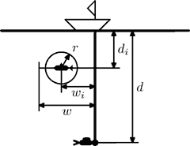

Home Page
F.A.Qs
Statistical Charts
Past Contests
Scheduled Contests
Award Contest
| Online Judge | Problem Set | Authors | Online Contests | User | ||||||
|---|---|---|---|---|---|---|---|---|---|---|
| Web Board Home Page F.A.Qs Statistical Charts | Current Contest Past Contests Scheduled Contests Award Contest | |||||||||
|
Language: Diver
Description Diver had just completed her mission in the depths of the ocean and needs to resurface. To get to the surface she must use the rope that goes straight down from her boat on the surface to her location d feet under the water. However, while she was working, several sharks gathered near the rope. They do not consider her a danger or a prey yet, but if she gets closer than r feet to a shark, then it immediately attacks her. To avoid decompression sickness diver can descend (go down) or ascend (go up) at most vd feet per second. She also cannot go deeper than d feet under the water. Each shark swims at its own constant depth of di feet near the rope. Speed and the pattern of movement for all sharks is the same. They cannot just stay in the water near the rope. They have to swim to avoid sinking, so they swim in a back-and-forth motion with a constant speed of vs — swimming away from the rope on distance of w feet and swimming back to the rope again. Sharks change the direction of their movement so fast, that we consider it being instantaneous. When a shark attacks the diver it also moves so fast, that we consider it to happen instantaneously as soon as the diver is inside a circle of r feet in radius around a shark. Your task is to figure out if the diver can get to the surface without being attacked by a shark, and if yes, then how fast she can do it. Input The first line of the input file contains 6 integer numbers:
Then follow n lines describing sharks with 3 integer numbers per line for each shark:
Initially the diver is more than r feet from any shark. Output Write to the output file IMPOSSIBLE if the diver cannot get to the surface or write the minimal time that it will take the diver to resurface with precision of at least 10−5. Sample Input 10 1 2 1 10 1 6 4 -1 1 1 1 Sample Output 11.414213562373096 Source | ||||||||||
[Submit] [Go Back] [Status] [Discuss]
All Rights Reserved 2003-2013 Ying Fuchen,Xu Pengcheng,Xie Di
Any problem, Please Contact Administrator